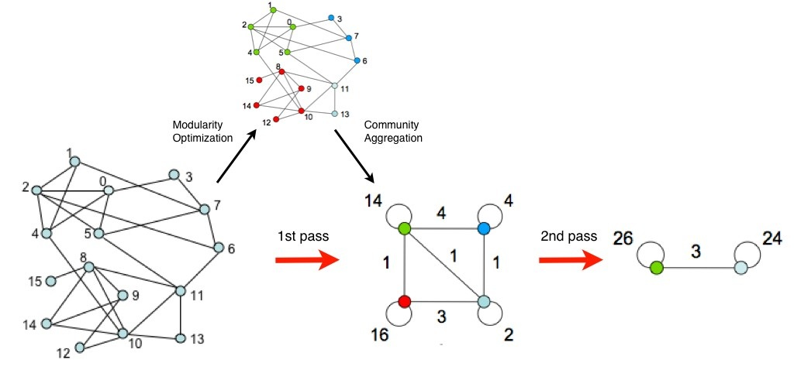

This week makrs the beginning of GSoC's actual coding perioid.
The preceeding "Bonding Period" has been used to investigate the field and to fathom existing methods and approaches regarding their suitability for our endeavours.
The result from these idea gathering is the Method Pool at the end of the article.
Additionally in order to get to know the existing codebase of C-PAC simpler experimentations has been done.
Here as a means to getting to know the C-PAC codebase and existing implementations, the cluster coefficient has been implemented using a trivial brute force approach.
Furthermore this shed initial insides on how to use Cython and generate efficient C-Code from Python sources which can be important for later implementations of resourc hungry algorithms.
def cluster_coefficient(np.ndarray[float, ndim=2] cmat, np.ndarray[float, ndim=1] centCluster, float thresh):
cdef unsigned int i, j, k
degree = np.zeros_like(cmat[0], dtype=cmat.dtype)
for i in xrange(cmat.shape[0]):
degree[i] = cmat[i].sum()
for j in xrange(cmat.shape[1]):
if (cmat[i, j] == 1):
for k in xrange(cmat.shape[1]):
if ((cmat[i, k] == 1) and (cmat[j, k] == 1)):
if degree[i] > 1:
centCluster[i] += 1/(float(degree[i] * (degree[i] - 1.)))
Outlook
As per the GSoC proposal we will focus on more sophisticated measures in the further progress of the project. Methods belonging to the realm of community detection/modularity will be in the focus. These approaches do not only summarize the presence of densely interconnected groups but give a measure of the exact size and composition.
One performant algorithm for this approach is the so called “Louvain method”.
This algorithm employs a heuristic method to optimize the modularity structure and give as output a (highly accurate) approximation of the community structure.

Method Pool
Louvain
(Blondel, Guillaume, Lambiotte, & Lefebvre, 2008)
Heuristic approach for greedy modularity optimization
greedy -> limit to local optimization
Multi resolution through hierarchical scheme -> after meta step nodes accumulated together to form “super node”
tree/dendrogram implies O(log n) complexity
InfoMap
(Rosvall & Bergstrom, 2007; 2008)
Modularity optimization is a special case of a larger problem: Finding communities by optimizing some quality function Q. The Louvain method described above assume that Q = M (Moduliarty), seeking partitions with maximal modularity. The Infomap algorithm follows the general heuristic of the Louvain approach by locally moving nodes, however attempts to identify communities by minimizing the map equation L, an entropy-based measure of the partition quality. Also known as “flow optimization”
Runtime: O(N log N)
Rich Club
(Colizza, Flammini, Serrano, & Vespignani, 2006; Gollo, Zalesky, Hutchison, van den Heuvel, & Breakspear, 2015; Senden, Deco, de Reus, Goebel, & van den Heuvel, 2014; van den Heuvel & Sporns, 2011)
The so-called “rich-club” phenomenon in networks is said to be present when the hubs of a network tend to be more densely connected among themselves than nodes of a lower degree (Colizza et al., 2006). The name arises from the analogy with social systems, where highly central individuals— being “rich” in connections—often form a highly interconnected club
Rich Club and Hubs are popping up in literature as they have been shown to be an underlying factor in pathological changes (e.g Alzheimer, Schizophrenia). (Crossley et al 2014)
Important Graph Metrics for Rich Club
- s-core decomposition (Eidsaa & Almaas, 2013)
- Modularity partitioning ala Newman (Lancichinetti & Fortunato, 2009)
- Betweenness Centrality
- Rich Club Centrality
OSLOM
(Lancichinetti, Radicchi, Ramasco, & Fortunato, 2011)
The OSLOM method is based on the local optimization of a fitness function expressing the statistical significance of clusters with respect to random fluctuations, which is estimated with tools of Extreme and Order Statistics.
In contrast to other community detection methods like Louvain Method and InfoMap, OSLOM is capable of detecting overlapping communities, which is crucial as real world (esp. biological networks) exhibit this property.